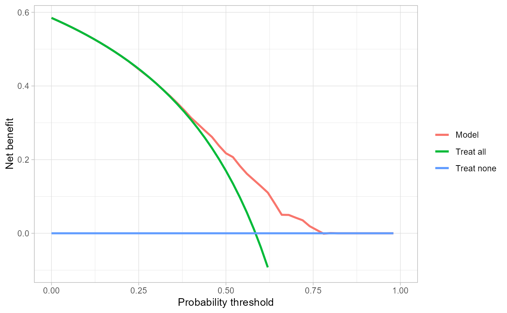
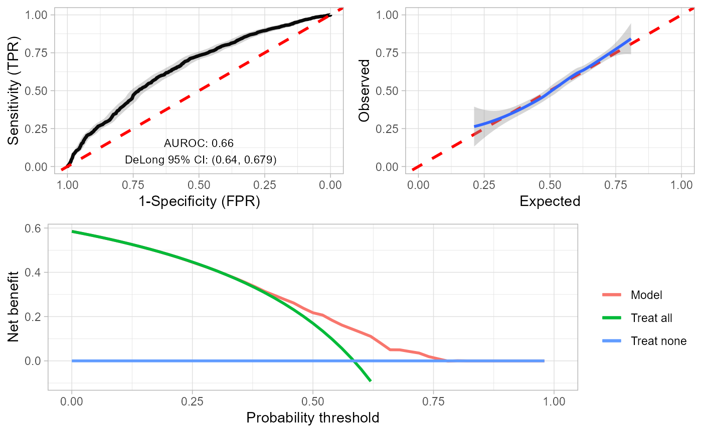

survPlots.RdPlots for survival models
CoxPH model object
Time point to show performance at
Data contained in data frame
Name of the event variable in df
Name of the time variable in df
One of "ROC", "Calibration", or "Decision"
Limit of the x-axis for "Calibration" or "Decision"
Limit of the y-axis for "Calibration"
True or False to show net interventions for "Decision"
Colour of the plot line
GGPlot object
# Example using Rotterdam breast cancer data
library(survival)
mod <- coxph(Surv(rtime, recur) ~ age+meno+grade+size, data = rotterdam)
head(rotterdam)
#> pid year age meno size grade nodes pgr er hormon chemo rtime recur dtime
#> 1393 1 1992 74 1 <=20 3 0 35 291 0 0 1799 0 1799
#> 1416 2 1984 79 1 20-50 3 0 36 611 0 0 2828 0 2828
#> 2962 3 1983 44 0 <=20 2 0 138 0 0 0 6012 0 6012
#> 1455 4 1985 70 1 20-50 3 0 0 12 0 0 2624 0 2624
#> 977 5 1983 75 1 <=20 3 0 260 409 0 0 4915 0 4915
#> 617 6 1983 52 0 <=20 3 0 139 303 0 0 5888 0 5888
#> death
#> 1393 0
#> 1416 0
#> 2962 0
#> 1455 0
#> 977 0
#> 617 0
survPlots(
model = mod,
time = 2000,
df = rotterdam,
eventVar = "recur",
timeVar = "rtime",
plotType="ROC")
#> Setting levels: control = 0, case = 1
#> Setting direction: controls < cases
#> Scale for x is already present.
#> Adding another scale for x, which will replace the existing scale.
survPlots(
model = mod,
time = 2000,
df = rotterdam,
eventVar = "recur",
timeVar = "rtime",
plotType="Calibration")
#> `geom_smooth()` using formula = 'y ~ x'
survPlots(
model = mod,
time = 2000,
df = rotterdam,
eventVar = "recur",
timeVar = "rtime",
plotType="Decision")
#> Printing with `plot(x, type = 'net_benefit', smooth = FALSE, show_ggplot_code = FALSE)`

survPlots(
model = mod,
time = 2000,
df = rotterdam,
eventVar = "recur",
timeVar = "rtime",
plotType="All")
#> Setting levels: control = 0, case = 1
#> Setting direction: controls < cases
#> Scale for x is already present.
#> Adding another scale for x, which will replace the existing scale.
#> `geom_smooth()` using formula = 'y ~ x'
#> Warning: Removed 1 rows containing non-finite values (`stat_smooth()`).
